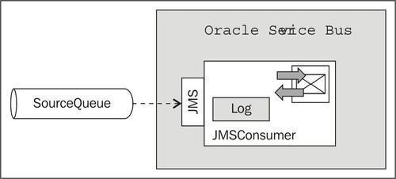
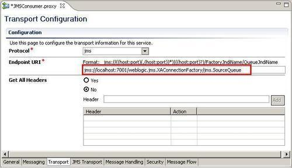
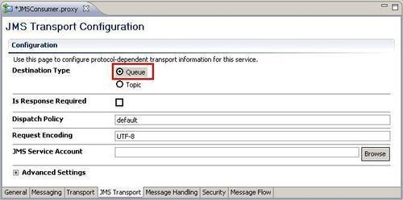
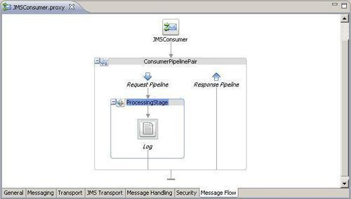
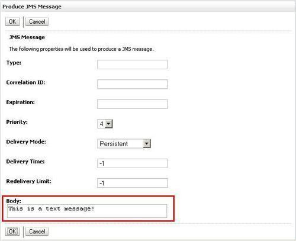
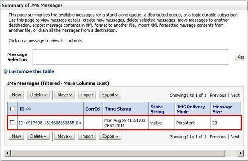
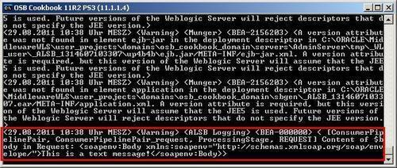

A message in a queue can only be consumed by a single consumer. To consume a message on the OSB, a proxy service with the JMS Transport needs to be setup.
In this recipe, we will show how to implement a proxy service as a message consumer for the queue. The proxy service will act as a listener on the JMS queue and will get active as soon as a message can be consumed from the queue.

For this recipe, we need one queue from the OSB Cookbook standard environment and will then implement the proxy service to dequeue the messages from the queue.
Let's create the proxy service to consume messages from the SourceQueue. In Eclipse OEPE, perform the following steps:
consuming-from-jms-queue and create a proxy folder within it. JMSConsumer. jms://localhost:7001/weblogic.jms.XAConnectionFactory/jms.SourceQueue into the EndpointURI field.


$body for the<Expression>, Content of $body in Request into the Annotation field and select Warning as the value of the Severity drop-down listbox.Now it's time to test the behavior of the OSB service. In WebLogic console, perform the following steps to put a message into the queue:
This is a text message! into the Body field and click OK.

Now go back to Eclipse OEPE and deploy the project to the OSB server. The message should get consumed immediately and the OSB console output window should show the content of message (that is, the body variable).
Even though we have only sent a plain text string This is a text message!, on the OSB server the content is wrapped inside a<soapenv:Body> element. This is important to know if you require access to the value of the message.

In WebLogic console refresh the Summary of JMS Messages view for the SourceQueue and check whether the message has really been consumed.
Setting the Service Type of a proxy service to Messaging Service allows us to set the Protocol to jms. On a proxy service, the JMS protocol always works inbound, that is, the proxy service is consuming messages from a queue. On a business service in contrast, the JMS protocol always works outbound, that is, the business service is putting the message to a queue.
The queue which should be used by the proxy service is specified by the Endpoint URI, together with the hostname and port of the JMS server and the connection factory to use.
After deploying the proxy service, it listens to the queue for messages and will consume it immediately and passes it to the message flow of the proxy service for execution.